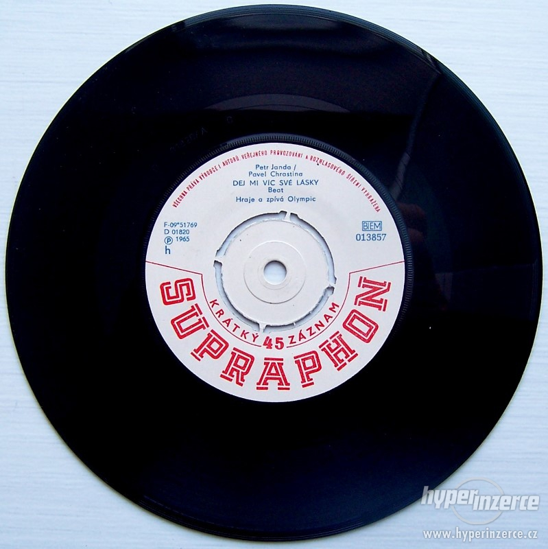

Barva stránky je jako anglické rajče. Gramofonová deska neboli gramodeska, známá též jako vinylová deska nebo prostě vinyl je záznamové médium určené pro záznam, uchování a reprodukci zvuku.
Že jsou gramofonové desky minulostí? Tak to není vůbec žádná pravda.
Jsou stále populárnější než kazety a to díky jejich jednoduchosti.
-neznámý muzikolog
Tento odstavec je zarovnán do bloku. Zvukový záznam je na gramodesku zanesen v formě spirálové drážky, soustředné umístění na jejím povrchu. Zvuková informace v drážce má analogovou podobu. Zápis je mechanický, což znamená, že je snímán meechanicky - pomocí hrotu lidově tvaného jehla.
| Typy gramodesek | Gramodesky | |
| SP | single play | |
| EP | extended play | |
| LP | long play | |
| GL | zvláštní typ | |
Toto je psáno písmem Arial. Gramodesky vyráběla u nás firma Supraphon nebo Prague records.
Po klepnutí myší na obrázek se v nové záložce otevře povídání o gramodeskách na wikipedii. Obrázek má šířku 400 fixelů a má kolem sebe okraj 20 pixelů. Druhá stránka má také rajčatové pozadí.
 ODKAZ NA DRUHOU STRÁNKU (jsou na ní vypsána některá gramo-vydavatelství a odkaz zpět na tuto stránku) ZDE STAŽENÍ SOUBORU VE WORDU (obsahuje seznam těch desek, které nejčastěji poslouchám)